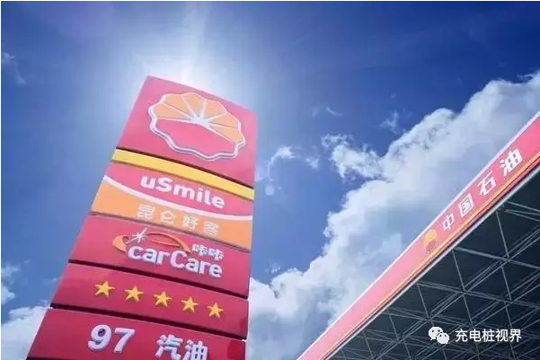
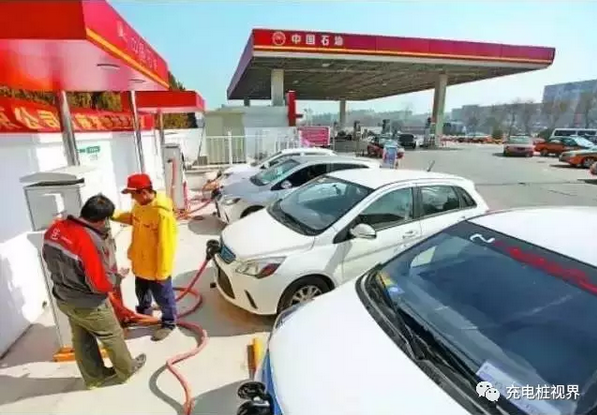
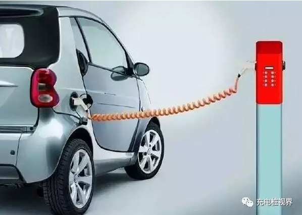
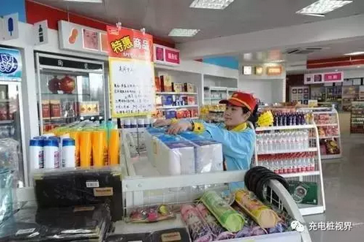

如果这样想，你可能就大错特错了，他们只是为未来提前布局而已。
面对在加油站安装充电桩这个新课题，不少能源企业只能望而却步。多年来，零星的几条国外新闻更是为这个新领域蒙上了神秘面纱。但终归还是会有有胆识的企业选择率先试水，提前在新能源领域展开布局。
2016年1月7日，国内两大巨头企业强强联手，中国石油集团与一汽集团签署战略合作协议，双方将在互联网汽车及新能源汽车领域开展合作，其中包括加强新能源汽车研发制造和应用推广，充电业务在加油站的试点和推广等项目。根据协议，中国石油将在重点城区及高速公路新建或增设电动汽车充电站及天然气加气站。
与一汽集团的合作可以说是中国石油在新能源领域里写下的最浓墨重彩的一笔，但要说到试水充电桩项目，恐怕还得再往前数几个年头。
据不完全统计，2015年4月中国石油北京销售公司就对奥东、龙江奔达2座加油站进行了试点改造——在距离加油机20米的安全距离外增设新能源汽车充电桩；2016年，又陆续在五环内的3座加油站增设充电桩；河南销售公司充电项目于2014年启动；广西销售公司充电桩项目也已建成，不久将会投入使用。。。
随着电动及混合汽车逐渐普及，中国石油各大销售公司纷纷在加油站增设充电桩，为车主提供动力保障。但在大力发展的同时还伴随着许多质疑声：在加油站安装充电桩，这事真的可行？
的确，给汽车充电，效率问题首先是车主关心的头等大事，不过根据现有充电桩的反馈数据来看，整体的运行效率较高：泸州销售龙马城北加油充电站共安装了30个380Ｖ快速充电桩，可同时为30辆电动汽车或油电混合汽车提供自助充电服务，据出租车司机介绍，充1个多小时电大概可行驶250公里；北京销售奥东加油站2台充电桩一次可为4辆车同时充电，每辆车快速充电至80％的电量只需30分钟。
除了效率问题，加油站建设充电桩还拥有其他优势。一方面，一方面，目前很多城市已经没有充足的土地来进行充电站的规划建设，如果考虑占用城市绿地，这本身就违背了国家发展新能源汽车的出发点，并且充电站建设本身就要满足“三通一平”(水通、电通、路通，场地平整)的条件，场地选址难度本身就很大，因此，在加油站里空余场地增设充电桩就可以避免场地的困扰。
另一方面，目前安装充电桩正处在起步试水阶段，现有的技术还远没达到超高效率、极速充电的程度。这时，车主几十分钟甚至一个多小时的闲暇时间就可以让加油站固有的设施被充分利用起来：泸州销售龙马城北加油充电站附近设立的客户休息室具有免费上网、看电视及休闲等功能；加油站里的便利店还能为充电客户提供方便面、糕点等快捷食品，给车主提供便利的同时还增加了加油站的销售收入。
在能源行业并不景气的大背景下，如何寻找新的盈利点是摆在各大能源公司面前最现实的问题，但如果只是简单将在加油站增设充电装备当作新的盈利“稻草”，现在有点为时过早。
从中国石油、中国石化的充电桩目前经营情况来看，单纯的充电业务很难盈利，主要是以示范为主。放眼国外，其实像壳牌、道达尔这样的能源公司现在也并非将增设充电桩作为直接盈利点，而是将其作为盈利链条上的某一个助力环节，这样持续性的盈利方式同样也为传统的能源公司打开了新思路。
据中国石油规划总院市场所罗燕托博士后介绍，中国石油目前的主要思路就是依托油-气-电-非油加油站“人·车·生活”驿站的定位功能，简单来说就是初期可以将充电桩作为引进客户的重要渠道之一，插电式电动汽车车主可以在加油站实现一站式的行为，比如加油+充电+购物，并且，这一系列行为的结束并不代表真正意义上的结束，如何激发车主的后续行为才是加油站最应该下功夫思考的。
比如通过产业链上各个环节发展增值服务，如：“充电桩+广告”、电动汽车经营、电动汽车分时租赁、电动汽车汽服、电子支付等等。
尽管目前来看，在加油站安装充电桩还只是停留在示范及实验阶段，但可以肯定的是，它拥有着改变未来世界的潜力！